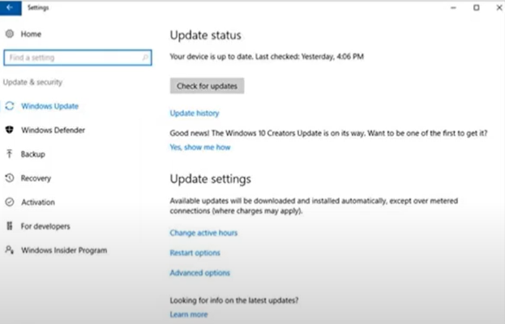

Windows Update Manager
bilgisayarınızda bulunan yazılım ve sürücülerin güncel olmasını sağlar. Bu araç, Microsoft'un sunucularında bulunan en son güncellemeleri kontrol eder ve bu güncellemeleri bilgisayarınıza yükler.
Windows Update Manager, bilgisayarınızın performansını ve güvenliğini artırmak için çeşitli güvenlik güncelleştirmeleri, hizmet paketleri, sürücüler ve diğer yazılım güncelleştirmelerini otomatik olarak yükler. Böylece, bilgisayarınızın en son özelliklere ve işlevselliğe sahip olmasını sağlar.
NOT : Büyük bir şirkette olduğunuzu düşünelim ve şirkette 100 adet Windows bilgisayar var ve hepsi aynı anda bir güncelleme almak istediğinde şirketin ağına inanılmaz bir yük verir. işte bu gibi durumlarda Windows Update'te bulunan özellik bir bilgisayara indirilen Update'in kalan tüm bilgisayarlara internetten değil sunucudan almasına olanak sağlayarak şirket ağını büyük bir yükten kurtarır.
